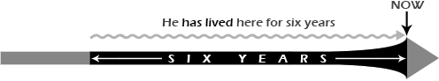

-
-
 Share on Facebook
Share on Facebook -
 Share on Google+
Share on Google+ -
 Share on Twitter
Share on Twitter
-
-
-
 Trần Đức Bằng visited your website
Trần Đức Bằng visited your website
2 minutes ago -
 Lê Trần Anh Khoa visited your website
Lê Trần Anh Khoa visited your website
10 minutes ago -
 Hoàng Bửu visited your website
Hoàng Bửu visited your website
25 minutes ago -
 Cao Thành Đỗ visited your website
Cao Thành Đỗ visited your website
36 minutes ago -
 Thiên Phúc visited your website
Thiên Phúc visited your website
44 minutes ago -
 Huỳnh Giang Giang visited your website
Huỳnh Giang Giang visited your website
49 minutes ago -
 Nguyễn Trọng visited your website
Nguyễn Trọng visited your website
50 minutes ago -
 Nguyễn Hoàng visited your website
Nguyễn Hoàng visited your website
57 minutes ago -
 Thắng visited your website
Thắng visited your website
1 hour ago
-
-

- Username: Phanhuytran
- Full Name: Phan Huy Tran
- Email: Philiptran@gmail.com
- Nationality: United States
- Sign out
IELTS Mentor
"IELTS Sample Answer & IELTS Preparation"
- IELTS Listening Section 1
- IELTS Listening Section 2
- IELTS Listening Section 3
- IELTS Listening Section 4
- IELTS Listening Exercise 1
- IELTS Listening Exercise 2
- IELTS Listening Exercise 3
- IELTS Listening Exercise 4
- Expressions with time
- Condition
- Contrast & Comparison
- Presenting an argument
- Writing a letter
- How something works
- Present Simple
- Present Continuous
- Past Simple
- Past Continuous
- Used to and Would
- Present Perfect Simple
- Conditional Sentences
- The writing component
- Writing: Bar graphs
- Writing: Pie charts
- Writing: Tables
- Writing: Processes
- The speaking component
- The Interview
- The reading component
- Sample reading text
- The listening component
- Last Updated: Saturday, August 10, 2019
- Written by Duc Bang Tran & Phan Huy Tran
- Hits: 8.947.320
Present Perfect Simple.
+ Subject + have/has + past participle
Examples: He has finished his homework.
- Subject + have/has not + past participle
Examples: I haven't finished my homework.
? Have/Has + subject + past participle?
Example: Have you finished your homework?
The principal uses of the present perfect are listed below.
-
To refer to a time period which is not yet finished (e.g. today, this month):
We've bought a new house this week. (an incomplete period).
-
To show that something happened in the past. We don't state when is happened:
I've lost my watch. Have you seen it anywhere?
Note: If we give the time we must use the simple past:
I lost my watch yesterday. (notI've lost my watch yesterday).
The following time expressions are often used: ever, never, always, up to now, so far.
This is the worst storm we've ever had. (at any point before now).
-
To talk about a situation which started in the past and usually continues after the time of speaking in the present:

He has lived here for six years. (He has lived here till now).
We use for with a lenght of time (e.g. for three weeks, for two days, for six years) and with a point in time (e.g. since 2010, since Wednesday, since nine o'clock, since I was five, since I moved here).
-
To talk about an action which occured at an unstated time in the past, provided that there is still a connection with the present:
I’ve collected all the documents that are needed for the house sale. (I have the documents now).
Note: If we give the time we must use the simple past:
I lost my watch yesterday. (notI've lost my watch yesterday).
-
The following time expressions are often used: recently, just, already, and yet with negatives or questions.
I've just arrived.
Have you done your homework yet?
Compare the use of the present perfect with the past simple:
| Present perfect | Past simple |
| Links the past with the present: John has won several awards. (at some point before now and he may win more awards) |
Only talks about the past: John won several awards in 2012. |
| Does not talk about a specific time in the past: Have you read the latest issue of the Magazine? (at some time before now) |
States a specific past time, or the time is understood: I read the latest issue of the Magazine when I was at home. (I'm not at home now and the reading is finished) |
| Uses time expressions that show the time period is unfinished: I haven't seen John this morning. (up to 12 noon, the morning isn't finished) |
Uses time expressions that show the time is finished: I didn't see John this morning. (after 12 noon, last morning has finished) |
Note the position of the following time expressions that occur with the present perfect:
-
Between the auxiliary and main verb (e.g. recently, already, always, ever, just, never):
I've already bought my ticket.
I’ve never met your brother.
Ever is generally used with questions or negatives:
Have you ever been to London?
-
After the main verb (e.g. all my life, every day, yet, before, for ages, for two weeks, since 2001, since I was ten etc.)
I haven't seen him for ages.
I’ve known John since I was ten.
If there is an object clause, the time expression comes at the end:
I've read this book every morning since then.
He hasn't ridden since he broke his arm.
IELTS online is optimized for learning, testing, and training. Examples might be simplified to improve reading and basic understanding. Tutorials, references, and examples are constantly reviewed to avoid errors, but we cannot warrant full correctness of all content. While using this site, you agree to have read and accepted our terms of use, cookie and privacy policy. Copyright 2019 by Duc Bang Tran & Phan Huy Tran IELTS online. All Rights Reserved.


Headquarters
» Address: 265/11A Nguyen Thi Dinh Street, Quarter 4, Binh Trung Tay Ward, District 2, Ho Chi Minh City
» Hotline: 0977477916 (Mr.Bang) - 0775398511 (Mr.Huy)
» Email 1: 1851050006bang@ou.edu.vn
» Email 2: 1851050056huy@ou.edu.vn